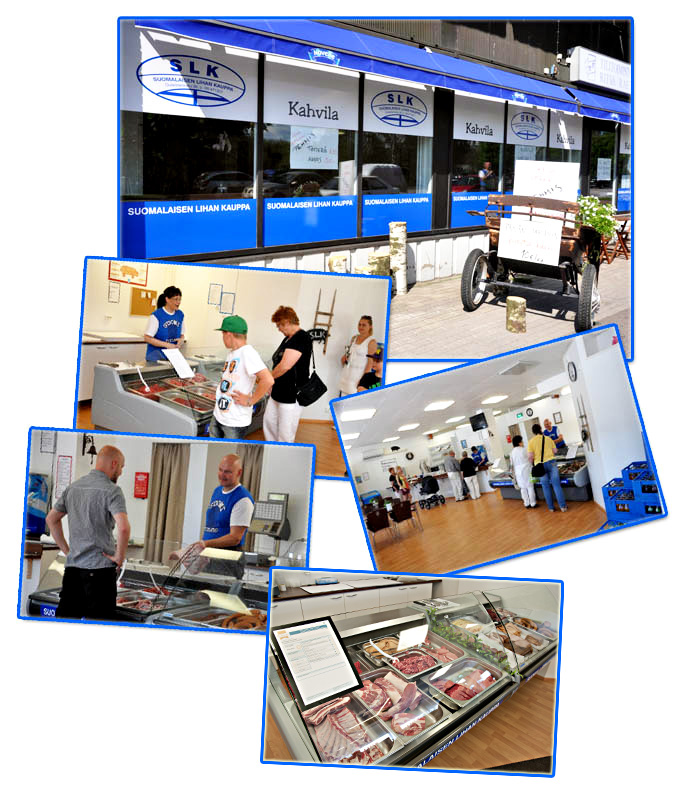

Yhteystiedot

Suomalaisen Lihan Kauppa Ay
Oulaistenkatu 36, 86300 Oulainen
Puh. 08-471327
posti(at)lihakauppa.net
Y-tunnus: 2466431-1
Vesa Malkamäki
040 094 0023
Aukioloajat
MA suljettu
TI - PE 10-17
LA 10-14
SU suljettu
Yhteystiedot
- Oulaistenkatu 36, 86300 Oulainen
- Puh. 08-471327
- posti(at)lihakauppa.net
Aukioloajat
- MA suljettu
- TI-PE 10-17
- LA 10-14
- SU suljettu


- © 2025 Suomalaisen Lihan Kauppa
- Suunnittelu ja toteutus:
Matias Tuura
& MacomTech